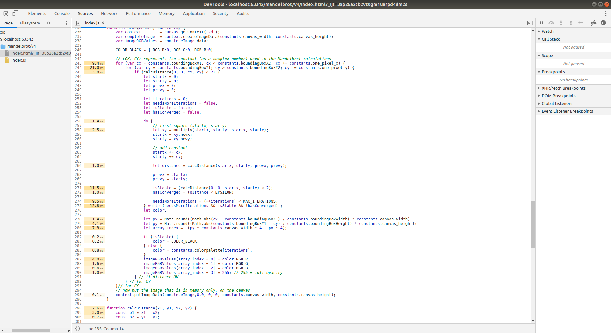
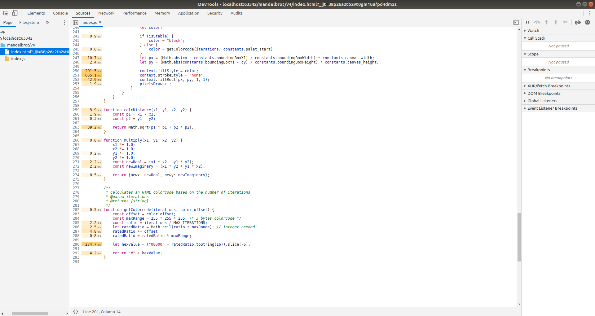

Mandelbrot
Code available at GitHub
Visualisation of Mandelbrot calculations
ƒ
(Z) = Z
2 + C
with possible variants in Z and C, using the mouse.
Variant 1
Working example can be viewed here
Have a look at this video.
{kind=link}
Variant 2
Working example can be viewed here
Have a look at this video.
Variant 3
Working example can be viewed here
Have a look at this video.
Variant 4
Working example can be viewed here
This version was heavily optimised using a complete different way of drawing the pixels. This results in a
dramatic boost in performance.
First the step was made to create a palette only once, in stead of calculating the colors for every pixels.
With a maximum number of iterations
the palette only has 200 items which isn"e;t a big deal memory-wise.
Second the way of drawing the pixels is changed: in stead of of drawing each pixel separately directly on
the canvas,
the pixels are first stored in an ImageData. Thanks to this
Stack Overflow answer this works well.
The resulting performance boost can be viewed in this source-code image, enriched with data from the
Javascript profiler.

Compare with old code:

{kind=link}
{kind=link}
The resulting code is so fast that even on a decent computer a live-preview of the zoombox is possible. This can be enabled using the checkbox on the right.
Variant 5
Working example can be viewed here
And yet another fun Mandelbrot project.
Completely refactored the code to speed things up. Now it's possible to have a live preview in the zoombox.
The new method separates the calculations from the drawing, making it possible to swap the color palette
without doing all the recalculations. So, now the slider for the palette immediately sends a request to
calculate a new palette and immediately apply it to the current situation.
When zooming in the previous situation is stored in a history list. So, using the right mouse-button you can
quickly go back to your previous situation, even preserving the palette.
Have a look at this video.
Variant 6
Working example can be viewed here
Have a look at this video.

Variant 7
Working example can be viewed here
Lots of improvements
- Help page with keyboard shortcut
- Immediate zoom available after redraw/zoom
- Proper saving of palettes
- HSL + RGB palettes available
- Resize canvas; width and height independantly; remembered in browser local storage
- Reporting of zoom factor
- history is saved in browser local storage so page refresh will restore last situation + complete history
- Zoombox can be made invisible
Have a look at this video.